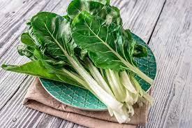
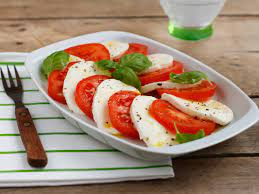
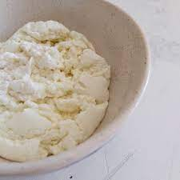

El relleno está formado por los ingredientes que se introducen en otro alimento. Es posible preparar un pollo cuyo relleno sea jamón y queso o un pavo que tenga diversas verduras como relleno, por citar algunas posibilidades.
Calabaza
Ingredientes
500 gr de zapallo anco
125 gr de mozzarella
1 diente de ajo
Tomillo c/n
Sal c/n
Pimienta c/n
Paso a paso
Cocinar en una placa a horno medio/fuerte el zapallo cortado por la mitad con un poco de aceite de oliva por encima, ajo partido a la mitad, tomillo y pimienta hasta que el zapallo esté tierno.
No hervirlo porque absorbería mucha agua y quedaría líquido el relleno.
Quitar el ajo y el tomillo, pelar la calabaza y pisarla hasta que no queden trozos a la vista.
Agregarle sal y la mozzarella en cuadraditos chicos.
Relleno listo!
Una salsa de manteca y salvia acompañan perfecto!
Verdura

Ingredientes
1 atado de acelga
1 cebolla
½ morrón
150 gr de ricota
Sal c/n
Nuez moscada c/n
Pimienta c/n
Paso a paso
Comenzar rehogando cebolla y ajo picado.
Agregar las verduras.
Aprovechar esta idea para cuando sobran verduras en tu heladera.
Puede ser brócoli, acelga, tomates, zapallitos, calabaza, lo que sea!
Condimentar a elección y acompañar con alguna pasta corta.
También podés usar esta idea con verduras frías que no necesiten cocción y hacer ensaladas con pastas.
Capresse

Ingredientes
250 gr de tomate
150 gr de mozzarella
Albahaca c/n
1 diente de ajo
Sal c/n
Aceite de oliva c/n
Paso a paso
Quizás el relleno más simple y sabroso a la vez.
Hornear los tomates partidos en cuatro con los ajos y aceite de oliva hasta que pierdan el líquido.
Cortar la mozzarella en cubos y agregar bastante albahaca cortada con los dedos.
Incorporar los tomates picados y escurridos y condimentar con sal y pimienta.
Así de simple!
Ravioles

Ricota y nuez
250 gr de ricota
50 gr de nuez
1 yema
Sal c/n
Pimienta c/n
Paso a paso
Preparar la ricota con la sal y la pimienta.
Agregar la yema requerida.
Tranquilos que con la cocción de la pasta la yema se va a cocinar.
Incorporar las nueces picadas a la mezcla.
El tamaño de las nueces son a elección personal, es recomendable no triturarlas demasiado para sentirlas en un bocado.
Listo! Este relleno lo podés acompañar con una salsa de queso azul y va a ser una delicia.